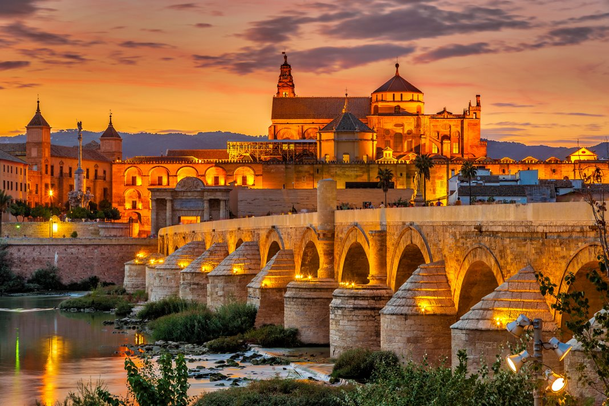

Background Information
This website is a tourist guide to anyone who wants to visit Spain. Spain is a developed country and has a high quality of life. Spain is also the home of the second most widely spoken language. The capital city of spain is Madrid. Spain is a beautiful place to visit.
Spain has a moderate climate with frequent rainfall year round. The southern and the eastern coasts have a more mediterranean climate, with long dry summers and mild winters. Central Spain's climate is characterized by long winters and hot summers.
The flag of Spain is made up of colors red and yellow. There are several legends about the colors. According to one legend, the colors were selected to represent the Spanish tradition of bullfighting. Red represents the blood spilled by the bulls whereas the yellow represents the sand in the bullfighting arena. A second legend claims that yellow represents the sun, whereas red represents the bloodshed by the Spanish People.
The People
| |
The population of Spain is about 50,015,792. The population of Spain is equivilant to 0.6% to the world's population. Spain ranks the 30th place in the world's countries by population. The growth rate of the population in Spain is about 0.7%. The urban population of Spain is about 80.57%. Most of the increasing portion of the population is composed of immigrants, mostly in North Africa, South America, and Eastern Europe. The population of the Spaniards is growing at a much lower rate than the global average. There are also low birth rates that stem in the high unemployment which makes it difficult for most people to buy houses to accommodate large families.
|
|
The official language of Spain is Castillan Spanish. It is the main language that is spoken by bussinesses, government and most of the population of Spain. There are also other languages that are official within some specific regions. Such as Catalan that is spoken by 17% of the population, Galician that is spoken by 7% of the population, and finally there is Basque which is spoken by 2% of the population of Spain.
|
There is no official Religion in Spain. Though about 67% of the population identify themselves as Catholic. To add on, about 3 percent of the population is involved with other (mostly Christian)religious groups. Some Muslims and Jews also live in Spain. Around 27% of the population nonbelieving,agnostic, or atheist.
The style of clothing differs from gender and age in Spain. Older men usually dress conservatively, avoiding flashy or bright colors. It is more common to see younger men wearing informal styles and bright ties with leather or woven bracelets peeking out of the sleeves of their suit jackets. Most women like to wear stylish dresses. Women's style of dress varies with age and economic status; older women are typically more conservative in dress, and younger women tend to care more about dressing in the latest fashions. Jewelry is common too. Older qne wealthier women might wear real jewels, but women in all social classes wear inexpensive jewelry. The majority of girls have their ears pierced at birth. Tattoos and body piercings are more common among younger generations.
Customs and Courtesies
In Spain, men usually greet each ither wuth a handshake. Good friends often add a pad on the back and if they haven't seen each other in a long time then they also add an abrazo (hug). People of both genders greet women with one kiss on each cheek, similarly when parting women are given a slight embrace and a kiss on both cheeks.
Spaniards adresses professionals or older people by family name and title, such as Señor (Mr.), Señora (Mrs.). In formal conversations, such as in a government or higher education, the titles Don and Doña are used with the first name to show some special respect. Close friends and young people call each other by first names.
Popular food and tourist attractions
Spaniards mostly eat in Continental Style, with the fork in the left hand and the knife is used to push food onto the fork. Most people eat food at least three meals a day - el Desayuno (breakfast), el almuerzo (lunch), and la Cena (dinner).
Breakfast is typically a light meal that consists of coffee or hot chocolate, bread and jam, or sometimes Churros. Croissants and toast served with mase tomatoes are also eaten for breakfast. Lunch is a three-course meal including Soup, salad, or vegetables for the first course. Meat or fish for the main dish. Fresh fruit or yogurt for dessert. Additionally, fresh bread is purchased daily from pandería (bakery) is eaten with every meal. Adults enjoy coffee, wine, and mineral water. While children drink mineral water or soft drinks.
Some of the best tourist destinations that you should definetly visit in Spain are:
 |
Madrid: Madrid is Spain's capital and is a great destination for a weekend break. Madrid’s golden triangle of art galleries holds some of Europe’s most famous works from Picasso’s Guernica to Velázquez’s Las Meninas.
|
| |
Barcelona: It is Spain’s second largest city. It is a stunning Mediterranean location, famous architecture and cosmopolitan atmosphere.
|
| |
Seville: It the capital of Andalusia in southern Spain, and is famous for its flamenco culture. If you want to know more about seville's history then you must vist Real Alcázar.
|
| |
Valencia: It is the birthplace of Paella, the most famos dish in Spain. If you vist Valencia, then you must explore Valencia old town.
|
| |
Mallorca: It is one of the gratest assets of Spain. This dreamy island getaway features beautiful beaches, picturesque small towns and outdoors pursuits that draw tourists in droves.
|
| |
Ronda: It has unique geography and stunning architecture. Ronda sits atop a striking gorge that separates the town. To cross the gorge, walk across the Puente Nuevo, a beautiful bridge built in the 18th century.
|
| |
La Rioja: The region of the same name is home to hundreds of vineyards, many of which offer tours and wine tastings.
|
|  |
Cordoba: It was the most important city during the Moorish rule of Spain in the Middle Ages, and it was home to the Mezquita, the vast Islamic mosque built from the eighth to the 10th centuries.
|
| |
San Sebastian: It is an elegant city, on the coast in the Basque Country, is a must for foodies. Situated along the northern coast, San Sebastian is one of the most underrated destinations in Spain.
|
 |
Granada: It is like a Disney fairy tale come to life – it has a stunning ancient fortress, snowcapped peaks and winding cobbled streets. Granada's Arabic influence makes this destination different from the rest of Spain.
|
6 Popular foods in Spain.


The 6 foods above are Gazpacho, Paella, Tortilla Española, Gambas al ajillo, Tostas de tomate y jamón, and Patatas bravas Image
Sports and Holidays
The popular sports in Spain are Soccer (fútbol) and Bullfighting (corrida de toros). Soccer is the most popular spectator sport in Spain. Fans often crowd homes and local bars to watch important matches. Other popular spectator sports include basketball and car or motorcycle racing. Bullfighting is usually considered more an art than a sport, though it remains popular among older generations in central and southern Spain. Bullfighting is less popular elsewhere in Spain, and some regions have even outlawed its practice.
Some of the Special holidays that are only celebrated in Spain are Las Fallas, Saint George's Day, San Fermin and La Tomatina.
In Valencia, Las Fallas (the fires) is a traditional festival celebrating Saint Joseph, whose day takes place in March. This festival consists of burning elaborate and expensive cardboard, wood, or paper-mâché sculptures and watching firework displays.
Saint George's Day (23 April) is popular in Catalonia. On this day, people buy their loved ones books and red roses from vendors in the streets.
In July, people in Pamplona celebrate the festival of San Fermin with a seven-day festival followed by the famous Running of the Bulls. Participants run with the bulls from the corral through the city streets to the bullfighting arena and wear white clothing with red handkerchiefs tied around their necks and red belts.
In the Valencia region, the people of Buñol hold the festival of La Tomatina, which takes place at the end of August. Participants hold the biggest tomato fight in the world.
Work Cited
https://www.britannica.com/place/Spain
http://online.culturegrams.com/world/world_country.php?cid=150&cn=Spain
https://travel.usnews.com/rankings/best-places-to-visit-in-spain/
https://theculturetrip.com/europe/spain/articles/the-15-best-destinations-to-visit-in-spain-in-2018/
https://www.edarabia.com/spain/flag/
https://uceap.universityofcalifornia.edu/programs/spanish-in-madrid
https://www.tripadvisor.com/Tourism-g1969684-Province_of_Barcelona_Catalonia-Vacations.html
https://apiabroad.com/study-abroad/spain/seville/contemporary-hispanic-studies-program/
https://www.marinareservation.com/articles/the-10-best-mallorca-marinas/
https://blog.aifsabroad.com/2019/05/01/reasons-to-visit-ronda-spain/
https://thenomadvisor.com/where-to-stay-in-cordoba/
https://www.cellartours.com/destinations/rioja
https://www.sustaineurope.com/san-sebastian-more-than-a-capital-of-culture-20172006.html
https://www.spain.info/en/places-of-interest/alhambra/
https://theforkedspoon.com/paella-recipe/
https://www.196flavors.com/spain-gambas-al-ajillo-garlic-prawns/
https://www.seriouseats.com/recipes/2016/07/tortilla-espanola-spanish-potato-omelette-recipe.html
https://www.tienda.com/recipes/patatas-bravas.html
https://www.familyfoodonthetable.com/easy-tomato-gazpacho-soup/
https://www.rebanando.com/articulo-1483-deliciosa-tosta-de-jamon-con-tomate.htm
https://www.bbcgoodfood.com/howto/guide/top-10-foods-try-spain
https://hutchinsonbear.com/6139/school-life/spanish/